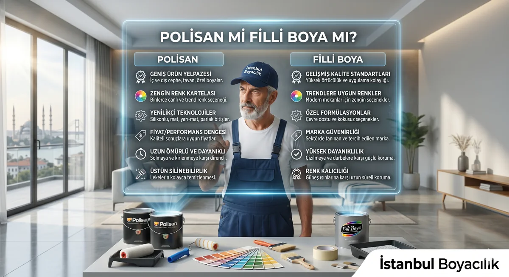

Polisan mı Filli Boya mı? Silinen koridor duvarı için iki seri
Koridor ve antre yenilemesinde Polisan Elegans Extra Yarı Mat ile Filli Boya Momento Silan karşılaştırılabilir iç cephe duvar ürünleridir. Buradaki soru, duvarın mevcut kaplamasına ve tercih ettiğiniz görünüme hangi sistemin uyduğudur.
Kaynak kontrolü: 12 Ekim 2026. Elegans Extra Yarı Mat föyü 13.02.2025 tarihlidir. Momento Silan PDF'sinde açık revizyon tarihi bulunamadı. Aşağıdaki değerler üretici açıklamalarıdır; bir leke çıkarma veya sürtünme testinin sonuçları değildir.
Koridor için ürün ve hazırlık tablosu
| Karar kalemi | Elegans Extra Yarı Mat | Momento Silan |
|---|---|---|
| Kullanım / görünüm | İç cephe sıva ve beton gibi mineral yüzeyler; yarı mat | İç cephe duvar; ipeksi mat |
| Tek kat tüketim verimi | 16,5–26,5 m²/L | 13–22 m²/L |
| Katlar / bekleme | 2 kat; 20°C kuruma tablosunda katlar arası 4 saat, uygulama metninde en az 4 saat | En az 2 kat; katlar arası 4–6 saat |
| Uygulama aralığı | Ürün sayfası 5–30°C; 2025 föyü 5–35°C verir, güncel etiket/teknik servisle teyit gerekir | Hava ve yüzey +5°C ile +30°C |
| Eski solvent bazlı duvar | Transfer Astarı | Hazırlıktan sonra Momento Dönüşüm Astarı |
| Alçılı alt yüzey | Föyde A-Star; astardan sonra 18–24 saat bekleme | Momento Şeffaf Jel / Konsantre Astar; ilgili alçı hazırlığına göre bekleme |
| Temizlik beyanı | Silinebilir, leke dirençli | Silinebilir ve yıkanabilir |
Tablo kaynakları: Elegans Extra Yarı Mat teknik bilgi formu ve Momento Silan teknik föyü; ürün tanımları Polisan ürün sayfası ile Filli Boya ürün sayfasındadır. İncelenen belgelerde ortak koşullarda karşılaştırılabilecek sayısal ıslak sürtünme sınıfı bulunamadı. “Silinebilir” ifadesi her lekenin iz bırakmadan temizleneceği anlamına gelmez.
Dar antrede hazırlık neden seçim kadar önemli?
Kapı çevresinde ellerin değdiği bölgeleri, duvardaki eski yağlı boyayı ve tamir edilen alanları keşifte ayırın. Yeni alçı ile eski solvent bazlı kaplamaya aynı astar uygulanması doğru bir varsayım değildir. İki seri için de sağlam, kuru ve temiz alt yüzey gerekir; tozuyan ya da kabarmış katın üstünü yeni boya ile kapatmak hazırlığın yerini tutmaz.
Yarı mat ve ipeksi mat adları üreticilerin görünüm tanımlarıdır. Koridor lambası açıkken bir numune yapıp tamiratların ve rulo izlerinin nasıl göründüğünü inceleyin. Yüksek nemde süreler uzayabilir; dokunma kurumasını hemen deterjanla silmeye hazır olma gibi değerlendirmeyin. Polisan ürün sayfası maksimum silinebilme için yaklaşık 30 günlük kemikleşme süresi belirtir. İlk temizlik zamanını ve uygun temizleyiciyi satın alınan ürünün talimatından teyit edin.
Kova yerine tamamlanan duvarın maliyetini karşılaştırın
Bayi teklifine seri, renk bazı, litre, teklif tarihi ve astarı yazdırın. Tek kat m²/L değerini kat sayısıyla birlikte hesaplayın; daha yüksek yayımlanmış verim, aynı duvarda ölçülmüş tasarruf değildir. Dar antrede maskeleme, kapı kenarı tamiri ve eşya koruma da işçilik kapsamına girmelidir. Bu yazı güncel fiyat veya marka garantisi karşılaştırması yapmaz.
İstanbul boya ustası keşfinde koridorunuzun boya ve alçı durumunu inceleyip iki tam ürün sistemiyle teklif kapsamını oluşturabiliriz. Sadece marka adı yerine astar, son kat seri ve hazırlık kalemlerinin yazılması sonraki uygulama kararlarını açık tutar.
Bölgenize Göre Hizmet Alın
Hangi boya türünün eviniz için daha uygun olduğundan emin değilseniz, duvar yapınıza ve kullanım alanınıza göre doğru boya seçimi için WhatsApp üzerinden destek alabilirsiniz.
Boya Seçimi İçin Danışın